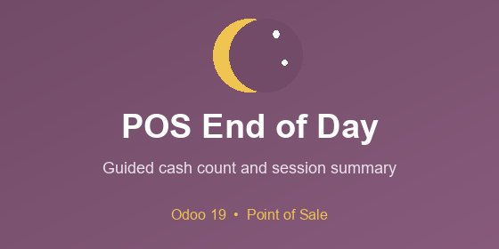
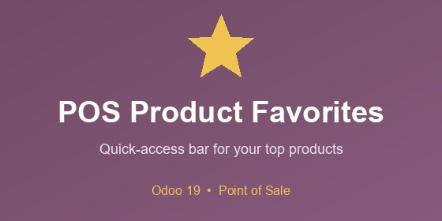
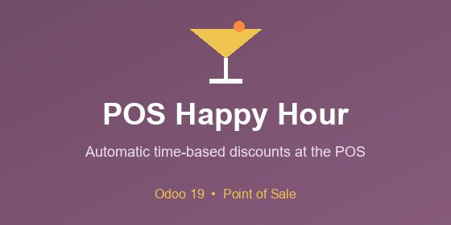
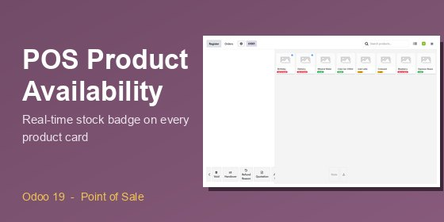
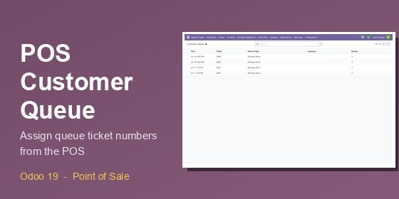
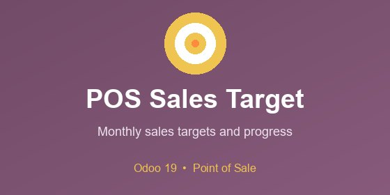
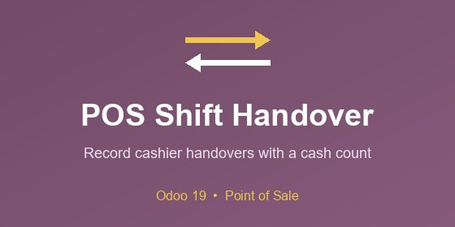
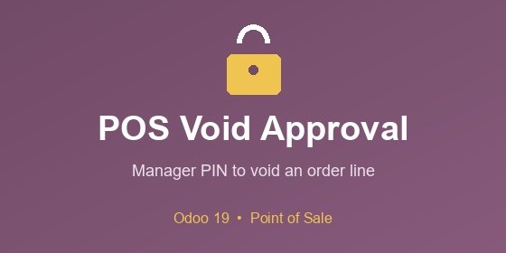

Point of Sale apps for Odoo
POS add-ons for Odoo: payments, cashier control, reports, restaurant and retail tools. 38 apps, 1 free, for Odoo 16 to 20.
 POS Auto Invoice for Company CustomersPOS auto invoice: orders of company (B2B) customers are flagged for invoicing automatically and the cashier is notified, so no business invoice is forgotten.
POS Auto Invoice for Company CustomersPOS auto invoice: orders of company (B2B) customers are flagged for invoicing automatically and the cashier is notified, so no business invoice is forgotten. POS Birthday Discount - Customer Birthday RewardPOS birthday discount applied automatically when the customer's birthday is today: birthday on the contact, discount percentage per Point of Sale.
POS Birthday Discount - Customer Birthday RewardPOS birthday discount applied automatically when the customer's birthday is today: birthday on the contact, discount percentage per Point of Sale. POS Category Discount - POS Discount Approval by PINPOS category discount: apply a percentage discount to every line of a POS category in one tap, with optional manager PIN approval per rule.
POS Category Discount - POS Discount Approval by PINPOS category discount: apply a percentage discount to every line of a POS category in one tap, with optional manager PIN approval per rule. POS Commission - Cashier Commission and POS Sales CommissionPOS commission per cashier: set a commission rate per Point of Sale, every line sold creates a commission record, and a report totals the cashier commission.
POS Commission - Cashier Commission and POS Sales CommissionPOS commission per cashier: set a commission rate per Point of Sale, every line sold creates a commission record, and a report totals the cashier commission. POS Credit Note - Create Credit Note from POS OrderPOS credit note in one click: create a draft customer credit note from a POS order with its customer and lines, ready to validate in Accounting.
POS Credit Note - Create Credit Note from POS OrderPOS credit note in one click: create a draft customer credit note from a POS order with its customer and lines, ready to validate in Accounting. POS Customer Debt Warning - POS Credit Limit AlertPOS customer debt warning: the cashier is alerted when the selected customer owes more than the credit limit, so no more credit is given unknowingly.
POS Customer Debt Warning - POS Credit Limit AlertPOS customer debt warning: the cashier is alerted when the selected customer owes more than the credit limit, so no more credit is given unknowingly. POS Daily Sales Report - End of Day PDF SummaryPOS sales report for the end of day: printable PDF per session with sales, tax, discount, average basket, payment and product breakdown.
POS Daily Sales Report - End of Day PDF SummaryPOS sales report for the end of day: printable PDF per session with sales, tax, discount, average basket, payment and product breakdown. POS Dashboard for Managers - Today's Sales per ShopPOS manager dashboard: one card per Point of Sale with today's sales and whether the register is open, a quick check across all your shops.
POS Dashboard for Managers - Today's Sales per ShopPOS manager dashboard: one card per Point of Sale with today's sales and whether the register is open, a quick check across all your shops. POS Delivery Charge - Add Delivery Fee in One TapPOS delivery charge: a Delivery button adds the delivery fee line to the order in one tap, with the fee amount set per Point of Sale.
POS Delivery Charge - Add Delivery Fee in One TapPOS delivery charge: a Delivery button adds the delivery fee line to the order in one tap, with the fee amount set per Point of Sale. POS Discount Log - Price Change Audit LogPOS audit log of discounts: every discounted line is recorded with product, price, discount, cashier and customer, to spot unusual discounting.
POS Discount Log - Price Change Audit LogPOS audit log of discounts: every discounted line is recorded with product, price, discount, cashier and customer, to spot unusual discounting.
POS End of Day - POS Closing and Cash CountPOS end of day closing: guided cash count with the session summary (orders, sales, expected cash) and the difference shown at once, logged on the session.
POS Favorite Products - Quick Access BarPOS favorite products (favourite bar): pin your best sellers to a quick-access bar at the top of the POS so cashiers add them in one tap. POS Franchise Royalty - Royalty on Sales per CompanyPOS franchise royalty: set a royalty rate per company and get the royalty of every POS order computed, with a sales and royalty report per franchise.
POS Franchise Royalty - Royalty on Sales per CompanyPOS franchise royalty: set a royalty rate per company and get the royalty of every POS order computed, with a sales and royalty report per franchise.
POS Happy Hour - Automatic Time-Based DiscountPOS happy hour discount applied automatically during the daily time window you set per Point of Sale, with a notice for the cashier. POS Hide Product Info ButtonPOS hide product info: show or hide the POS product info button in the product screen per Point of Sale.
POS Hide Product Info ButtonPOS hide product info: show or hide the POS product info button in the product screen per Point of Sale. POS Invoice Download - Disable Automatic Invoice PDFStop the automatic invoice PDF download after POS payment: turn the POS invoice download on or off per Point of Sale; the invoice itself is still created.
POS Invoice Download - Disable Automatic Invoice PDFStop the automatic invoice PDF download after POS payment: turn the POS invoice download on or off per Point of Sale; the invoice itself is still created. POS Layaway - POS Deposit and Pay LaterPOS layaway: hold products for a customer against a deposit, track the remaining balance, and let them pay the rest when they collect.
POS Layaway - POS Deposit and Pay LaterPOS layaway: hold products for a customer against a deposit, track the remaining balance, and let them pay the rest when they collect.- POS Member Discount - Member Price for CustomersPOS member discount: flag a customer as a member and the member discount set per Point of Sale is applied to the whole order automatically.
 POS Minimum Order Amount - Minimum ChargePOS minimum order amount: block payment of orders below the minimum charge set per Point of Sale, with a warning showing the minimum and the total.
POS Minimum Order Amount - Minimum ChargePOS minimum order amount: block payment of orders below the minimum charge set per Point of Sale, with a warning showing the minimum and the total. POS Modifier - Quick Drink and Order ModifiersPOS modifiers for drinks and food: one tap adds Extra shot, Less ice, Oat milk and other modifiers set per Point of Sale to the line note and the receipt.
POS Modifier - Quick Drink and Order ModifiersPOS modifiers for drinks and food: one tap adds Extra shot, Less ice, Oat milk and other modifiers set per Point of Sale to the line note and the receipt. POS Order Notes - Note per Order Line on ReceiptPOS note per order line: an Add Note button attaches a customer note (No onions, Gift wrap) to the selected line, shown on screen and printed on the receipt.
POS Order Notes - Note per Order Line on ReceiptPOS note per order line: an Add Note button attaches a customer note (No onions, Gift wrap) to the selected line, shown on screen and printed on the receipt. POS Price Change Restriction - Lock or Allow Open PricePOS price change control: lock the Price key on the POS numpad so cashiers cannot edit prices, or allow open price, per Point of Sale.
POS Price Change Restriction - Lock or Allow Open PricePOS price change control: lock the Price key on the POS numpad so cashiers cannot edit prices, or allow open price, per Point of Sale. POS Product Description - Product Details PopupPOS product info popup: an info button on product cards opens the full sale description (ingredients, specs, notes) without leaving the order screen.
POS Product Description - Product Details PopupPOS product info popup: an info button on product cards opens the full sale description (ingredients, specs, notes) without leaving the order screen.
POS Product Stock - Show Stock Quantity on Product CardsPOS stock display: a colour-coded on-hand quantity badge on every product card, so cashiers see availability without leaving the order screen. POS QR Payment - QR Code Payment on the Payment ScreenPOS QR code with the amount due on the payment screen, built from a payload you configure such as your payment link. Customers scan and pay by phone.
POS QR Payment - QR Code Payment on the Payment ScreenPOS QR code with the amount due on the payment screen, built from a payload you configure such as your payment link. Customers scan and pay by phone.
POS Queue Number - Customer Queue TicketPOS queue number for customers: a Queue button gives the next ticket number (Q001, Q002...) and staff call and mark tickets served from the backend list. POS Quotation - Create Sale Quotation from POSPOS quotation in one tap: turn the POS cart into a draft sales quotation with the customer and lines, for customers who want a written quote first.
POS Quotation - Create Sale Quotation from POSPOS quotation in one tap: turn the POS cart into a draft sales quotation with the customer and lines, for customers who want a written quote first. POS Refund Reason - Reason Code for Every RefundPOS refund reason codes: the cashier picks a reason for every POS refund in one tap and every reason is logged in the backend for analysis.
POS Refund Reason - Reason Code for Every RefundPOS refund reason codes: the cashier picks a reason for every POS refund in one tap and every reason is logged in the backend for analysis.
POS Sales Target - Monthly Target per ShopPOS sales target: give every Point of Sale a monthly revenue target and track this month's sales and progress, computed from POS orders. POS Session Report - Z Report with Product BreakdownPOS Z report (session report): printable end-of-session PDF with products sold, payment breakdown by method and session total, for cash reconciliation.
POS Session Report - Z Report with Product BreakdownPOS Z report (session report): printable end-of-session PDF with products sold, payment breakdown by method and session total, for cash reconciliation.
POS Shift Handover - Cashier Shift Cash CountPOS shift handover: record the cash counted when cashiers swap mid-session, with session, cashier and amount, for clear accountability per shift. POS Stock Adjustment - Inventory Adjustment from POSPOS inventory adjustment: set the on-hand quantity of a product with a reason straight from the POS, for quick counts, damage or spoilage.
POS Stock Adjustment - Inventory Adjustment from POSPOS inventory adjustment: set the on-hand quantity of a product with a reason straight from the POS, for quick counts, damage or spoilage. POS Stock Warning - POS Low Stock and Zero Stock AlertPOS stock warning: the cashier sees an alert when adding a product that is low or out of stock, before the sale is completed.
POS Stock Warning - POS Low Stock and Zero Stock AlertPOS stock warning: the cashier sees an alert when adding a product that is low or out of stock, before the sale is completed.
POS Void Approval - Manager PIN to Delete Order LinePOS manager approval to void: deleting an order line needs the manager PIN set on the Point of Sale, a wrong PIN blocks the void. POS Wholesale Price - Switch to Wholesale PricelistPOS wholesale mode: one button switches the whole order to your wholesale POS pricelist and back. Serve retail and wholesale customers from one POS.
POS Wholesale Price - Switch to Wholesale PricelistPOS wholesale mode: one button switches the whole order to your wholesale POS pricelist and back. Serve retail and wholesale customers from one POS. QR Menu - Digital Menu for POS and RestaurantQR menu for your restaurant or shop: a public, mobile-friendly digital menu page with the POS products and prices, opened by scanning a QR code. No app needed.
QR Menu - Digital Menu for POS and RestaurantQR menu for your restaurant or shop: a public, mobile-friendly digital menu page with the POS products and prices, opened by scanning a QR code. No app needed. QRIS Payment for POS - Indonesia Static QRISPOS QRIS payment: show your bank-issued static QRIS code with the amount to pay on the payment screen. Any QRIS bank or e-wallet, no external API.
QRIS Payment for POS - Indonesia Static QRISPOS QRIS payment: show your bank-issued static QRIS code with the amount to pay on the payment screen. Any QRIS bank or e-wallet, no external API. Table Reservation for POS - Restaurant BookingPOS reservation and restaurant booking: record bookings with customer, date and time, party size and note, track the status and see them in a calendar.
Table Reservation for POS - Restaurant BookingPOS reservation and restaurant booking: record bookings with customer, date and time, party size and note, track the status and see them in a calendar.